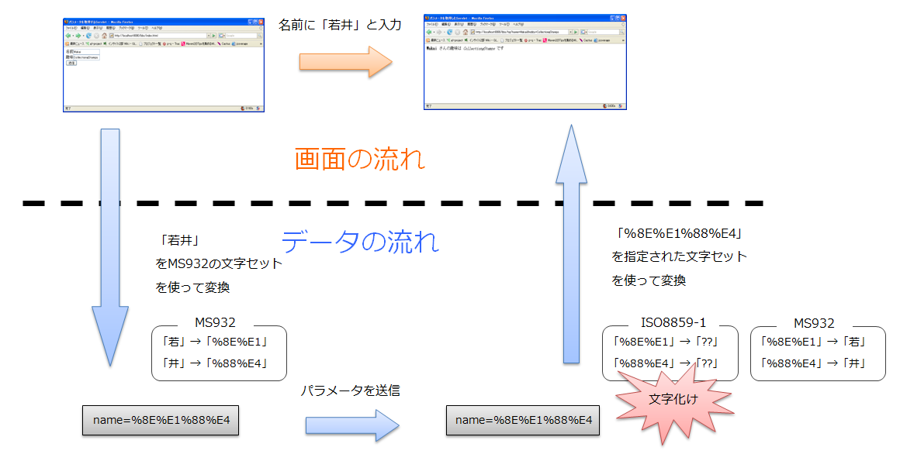
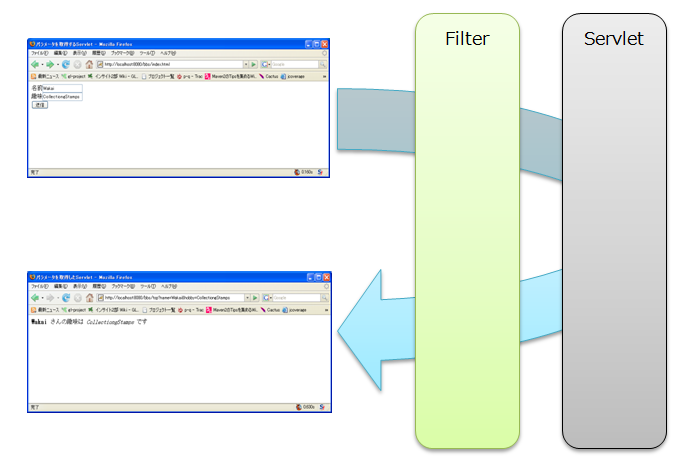

〜掲示板への道〜
2.日本語の文字化けを回避編
前ページのパラメータを受信するサーブレット編
では、日本語（全角文字）で試すと文字化けが発生していたと思います。
これを回避しましょう。
何故文字化けが発生するのか
まず、何故文字化けが発生するのかを考えましょう。
次の図を見てください

名前に「若井」と入力すると
MS932の文字セット（現在のページの文字セット）によって
「若」→「%8E%E1」
「井」→「%88%E4」
という変換が行われ、この16進数が Tomcat に渡されます。
Tomcat は受け取った16進数を戻す際に、何も指定されていないと、
ISO8859-1の文字セットを使って変換してしまいます。
ISO8859-1の文字セットには、「%8E%E1」に該当する文字はないため、「??」に変換されてしまいます。
文字化けの完成です。
文字化けを防ぐには、Tomcat に受け取った16進数を戻す際に使用すべき正しい文字セットを
教えてあげる必要があるのです。
文字化け対策をする
文字化けの仕組みが分かったところで、対策を施しましょう
Tomcat に受け取った16進数を戻す際に使用すべき正しい文字セットを教えてあげるには、次のメソッドを使用します。
request.setCharacterEncoding("正しい文字セット");
今の場合は、正しい文字セットは「MS932」ですので、文字化け対策を施した BBSServlet.java は次のようになります。
%CATALINA_HOME%\webapps\bbs\jp\co\insightech\BBSServlet.java
package jp.co.insightech;
import java.io.*;
import javax.servlet.*;
import javax.servlet.http.*;
public class BBSServlet extends HttpServlet {
public void doGet(HttpServletRequest request, HttpServletResponse response)
throws ServletException, IOException {
request.setCharacterEncoding("MS932");
String name = request.getParameter("name");
String hobby = request.getParameter("hobby");
response.setContentType("text/html; charset=MS932");
PrintWriter out = response.getWriter();
out.println("<html><head><title>掲示板</title></head>");
out.println("<body><b>");
out.println(name);
out.println("</b>さんの趣味は<i>");
out.println(hobby);
out.println("</i>です");
out.println("</body></html>");
out.close();
}
public void doPost(HttpServletRequest request, HttpServletResponse response)
throws ServletException, IOException {
doGet(request, response);
}
}
ただし、この変更だけでは、まだ十分ではありません。
Tomcat の場合は、POST で送信されたパラメータには
request.setCharacterEncoding("正しい文字セット");
で指定された文字セットを適用してくれるのですが、GET で送信されたパラメータには、適用してくれません。
（GETで送信されたパラメータにも適用させる方法はこちらを参照してください。）
そこで、ここではパラメータを POST で送信するように index.html を修正します。
%CATALINA_HOME%\webapps\bbs\index.html
<html>
<head>
<meta http-equiv="Content-Type" content="text/html; charset=Shift_JIS">
<title>掲示板</title>
</head>
<body>
<form action="./top" method="POST">
名前<input type="text" name="name"><br>
趣味<input type="text" name="hobby"><br>
<input type="submit" value="送信">
</form>
</body>
</html>
 String の getBytes メソッドも確認してください。
String の getBytes メソッドも確認してください。
いろいろな文字セットが存在します。調査しておきましょう。
Filter を使用する
文字化けを回避するには、どのようなサーブレットでも、処理を行う前に
request.setCharacterEncoding("正しい文字セット");
を実行する必要があります。このようなコードを全てのサーブレットに記述するのは手間ですし、
処理が見難くなってしまいます。
そこでこのような処理は Filter を作成し、そちらで行うようにします。
Filter は次の図のように、Servlete の処理が行われる前に実行されます。

それでは、次の手順に従って、Filter を作成してください。
1. web.xml に Filter の定義を追加する
修正後の web.xml の中身は、以下の通りです。
%CATALINA_HOME%\webapps\bbs\web.xml
<?xml version="1.0" encoding="UTF-8"?>
<!DOCTYPE web-app
PUBLIC "-//Sun Microsystems, Inc.//DTD Web Application 2.3//EN"
"http://java.sun.com/dtd/web-app_2_3.dtd">
<web-app>
<filter>
<filter-name>CharacterEncodingFilter</filter-name>
<filter-class>jp.co.insightech.CharacterEncodingFilter</filter-class>
<init-param>
<param-name>encoding</param-name>
<param-value>MS932</param-value>
</init-param>
</filter>
<filter-mapping>
<filter-name>CharacterEncodingFilter</filter-name>
<url-pattern>/*</url-pattern>
</filter-mapping>
<servlet>
<servlet-name>servlet_no_namae</servlet-name>
<servlet-class>jp.co.insightech.BBSServlet</servlet-class>
</servlet>
<servlet-mapping>
<servlet-name>servlet_no_namae</servlet-name>
<url-pattern>/top</url-pattern>
</servlet-mapping>
</web-app>
<filter> の <filter-name> と、<filter-mapping> の <filter-name> を合わせる必要があります。
2. insightech ディレクトリに CharacterEncodingFilter.java という名前のファイルを作成します。
ファイルの中身は以下の通りです。
%CATALINA_HOME%\webapps\bbs\jp\co\insightech\CharacterEncodingFilter.java
package jp.co.insightech;
import java.io.IOException;
import javax.servlet.Filter;
import javax.servlet.FilterChain;
import javax.servlet.FilterConfig;
import javax.servlet.ServletException;
import javax.servlet.ServletRequest;
import javax.servlet.ServletResponse;
/**
* 文字エンコードフィルタ。
*/
public class CharacterEncodingFilter implements Filter {
/**
* エンコード指定の初期化パラメータ名。
*/
private static final String INIT_PARAMETER_ENCODING = "encoding";
/**
* デフォルトのエンコード。
*/
private static final String DEFAULT_ENCODING = "MS932";
/**
* 文字エンコード。
*/
private String encoding;
/**
* 初期化処理。
* 初期パラメータ指定により文字エンコードを決定します。
*
* @throws ServletException
* 初期化が失敗した場合。
*/
public void init(FilterConfig config) throws ServletException {
// 文字エンコード指定
this.encoding = config.getInitParameter(INIT_PARAMETER_ENCODING);
if (this.encoding == null) {
this.encoding = DEFAULT_ENCODING;
}
}
public void destroy() {
this.encoding = null;
}
/**
* リクエストのエンコーディングがセットされていない場合、
* 初期化パラメータ encoding で指定されたエンコーディングを
* リクエストにセットします。
*
* @param servletRequest
* ServletRequest
* @param servletResponse
* ServletResponse
* @param chain
* FilterChain
* @throws IOException
* @throws ServletException
*/
public void doFilter(ServletRequest servletRequest,
ServletResponse servletResponse, FilterChain chain)
throws IOException, ServletException {
// HTTP要求に文字エンコード指定がない場合のみ
if (servletRequest.getCharacterEncoding() == null) {
servletRequest.setCharacterEncoding(encoding);
}
chain.doFilter(servletRequest, servletResponse);
}
}
なお、フィルターを使うようにしたため、BBSServlet.java では、もはや、request.setCharacterEncoding("MS932");
をやる必要はなくなりましたので、この処理は削除します。
%CATALINA_HOME%\webapps\bbs\jp\co\insightech\BBSServlet.java
package jp.co.insightech;
import java.io.*;
import javax.servlet.*;
import javax.servlet.http.*;
public class BBSServlet extends HttpServlet {
public void doGet(HttpServletRequest request, HttpServletResponse response)
throws ServletException, IOException {
String name = request.getParameter("name");
String hobby = request.getParameter("hobby");
response.setContentType("text/html; charset=MS932");
PrintWriter out = response.getWriter();
out.println("<html><head><title>掲示板</title></head>");
out.println("<body><b>");
out.println(name);
out.println("</b>さんの趣味は<i>");
out.println(hobby);
out.println("</i>です");
out.println("</body></html>");
out.close();
}
public void doPost(HttpServletRequest request, HttpServletResponse response)
throws ServletException, IOException {
doGet(request, response);
}
}
コンパイルして、実行してみてください。
日本語を送信しても、文字が化けなくなりましたか？
web.xml の <filter> タグと、<filter-mapping> 内の記述は何を設定しているのか調べておきましょう。
GETで送信されたパラメータにも request.setCharacterEncoding を適用させるには
GETで送信されたパラメータにも request.setCharacterEncoding を適用させるには %CATALINA_HOME%\conf\server.xml の
<Connector port="8080" protocol="HTTP/1.1"
connectionTimeout="20000"
redirectPort="8443"
/>
の部分を次のように変更します。
<Connector port="8080" protocol="HTTP/1.1"
connectionTimeout="20000"
redirectPort="8443"
useBodyEncodingForURI="true"
/>
これで、GET で日本語のパラメータを送信しても、文字が化けなります
©日本インサイトテクノロジー株式会社